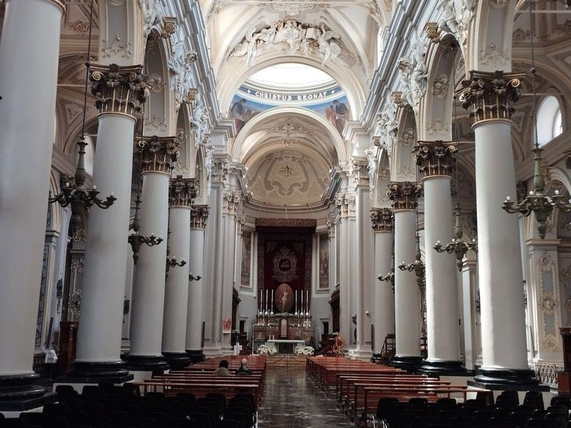
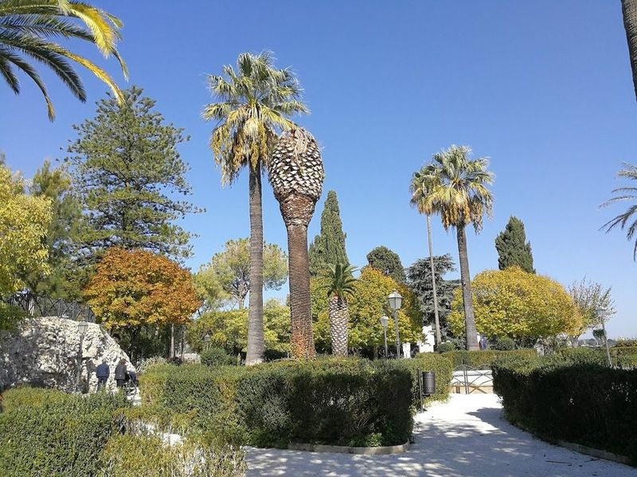
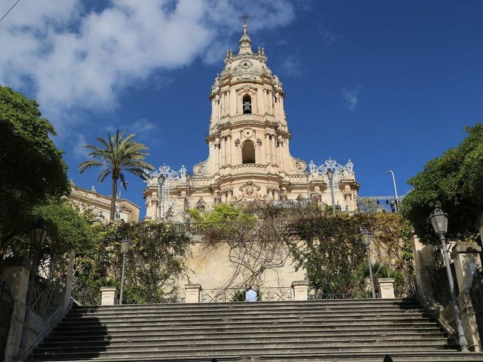
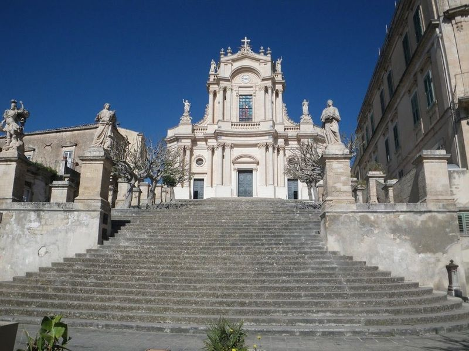
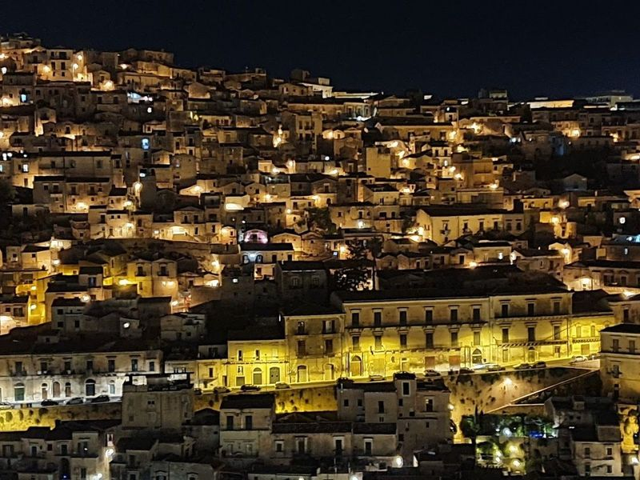
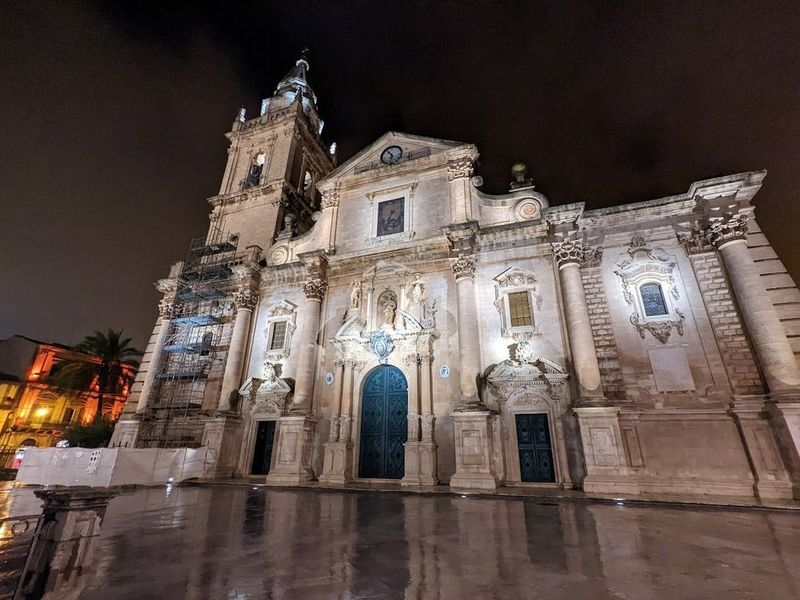
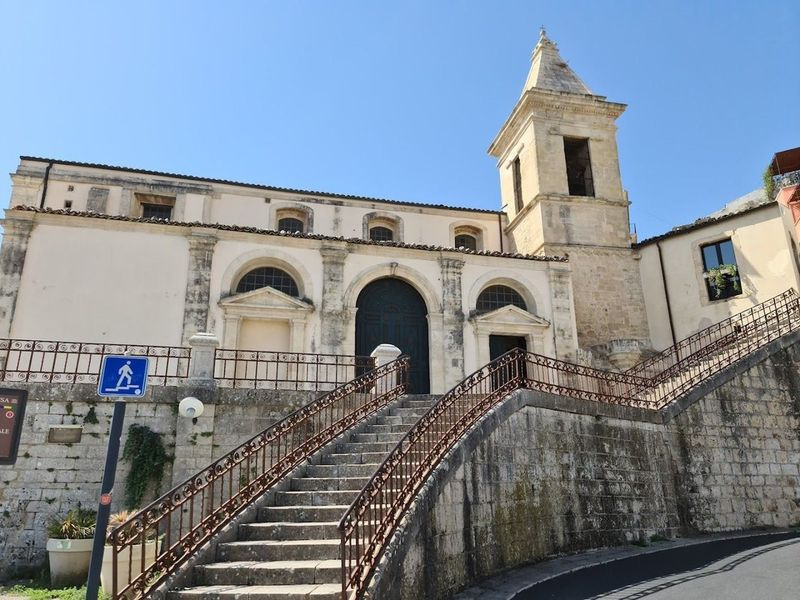
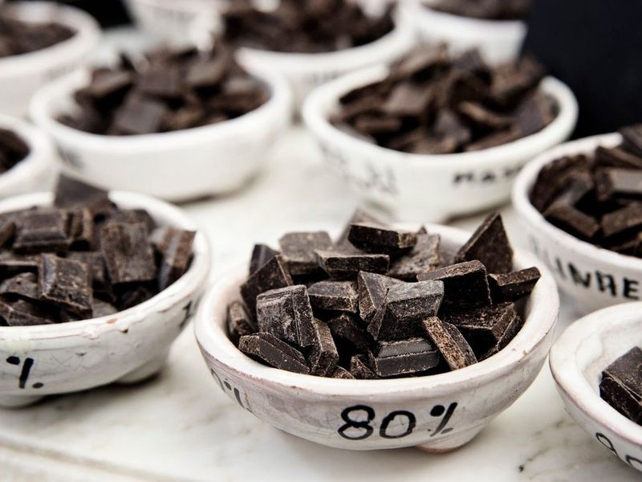
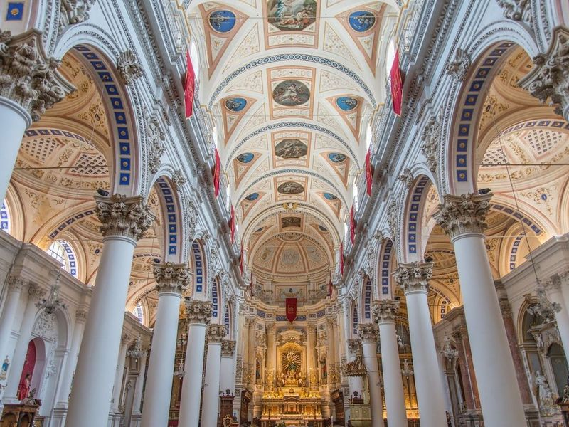
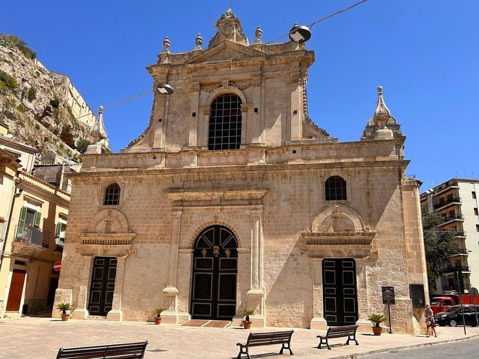

Explore Modica
A Brief History
Modica cascades down steep valleys in southeastern Sicily where Arab and Norman counts built churches and castles before the 1693 earthquake required baroque rebuilding. Cacao introduced from Spanish America under Aragonese rule evolved into a distinctive cold-worked chocolate tradition still sold along Corso Umberto. Split into Modica Alta and Bassa, the town preserves stairways, bridges, and civic palaces that connect feudal hilltops to valley-floor markets in the Hyblaean hills.
Attractions Map
Top Sights & Activities

Ragusa Ibla
Ragusa Ibla is a picturesque old city in Sicily, known for its baroque architecture and historical charm. Separated from modern Ragusa Superiore by a deep chasm caused by an earthquake, it boasts the impressive Basilica of San Giorgio. travellers can follow in the footsteps of Inspector Montalbano with a visit to Caffetteria Donnafugata and dine at the renowned two-Michelin-starred Duomo restaurant.

Giardino Ibleo
Giardino Ibleo is a picturesque public garden in Ragusa, offering sweeping views of the surrounding landscape. The well-maintained pathways lead travellers through flower beds, intricate fountains, and statues that create a serene atmosphere. Built in 1858 by volunteers, the garden sits atop a rock spur at an altitude of 385 meters, providing views over the valley below.

Duomo di San Giorgio
Duomo di San Giorgio is a renowned 18th-century cathedral featuring a neoclassical dome and a baroque facade. Surrounding the cathedral are significant civic and military buildings, including the ruins of the 13th-century Castle of the Counts of Modica and the 17th-century Palazzo Castro-Polara-Grimaldi. In Modica Alta, travellers can explore the Church of St.

Pizzo viewpoint
Pizzo Viewpoint, also known as Pizzo Belvedere, is a must-visit spot in Modica, Italy. Situated near Belvedere Principe di Piemonte and the church San Giovanni, it offers panoramic views of the city and its surroundings. The viewpoint features benches for travellers to relax and take in the picturesque Modica valleys. Additionally, there's a nearby nineteenth-century Chiesa di San Giovanni with an impressive facade and grand staircase.

Belvedere di San Benedetto
When in the area, make sure to include Belvedere di San Benedetto in itinerary for a panoramic view of the city. This picturesque spot offers a bird's eye perspective of Modica, making it an ideal location for capturing memorable photographs. While there may be some stairs to climb, the effort is undoubtedly worth it once witness the vistas that await.

Cattedrale di San Giovanni Battista
Ragusa Cathedral is a large, lavish Roman Catholic cathedral built in the 1700s. It features a small museum of religious art and relics, as well as lovely baroque architecture. The cathedral is places to visit in Ragusa, and is great for admiring its beauty in the evening.

Church of St Mary of the Stairs
The Church of St Mary of the Stairs, located in Ragusa Ibla, Italy, is a old town with a less maintained but atmosphere. The view from the top, framed by the bell tower of the church and local homes, is truly magical and worth returning to see in different lights.

Antica Dolceria Bonajuto
Antica Dolceria Bonajuto is a renowned chocolatier in Sicily, offering a variety of dark chocolate bars and pastries for take-away or outdoor enjoyment. The traditional method of production involves grinding cacao beans on a curved stone and creating cacao paste without any additional preservatives, fat, artificial flavors, or mechanized labor. This pure approach to chocolate-making is rare but still practiced at Antica Dolceria Bonajuto.

Duomo di San Pietro Apostolo
When visiting Modica, be sure to explore the Church of Saint Peter, a significant Baroque-style church that has been restored to its original state after the 1693 earthquake. This UNESCO World Heritage Site boasts Baroque architecture and features a staircase adorned with statues of the twelve apostles in front of its facade. The church is a attraction in Modica, known for its impressive beauty both during the day and at night.

Chiesa Collegiata di Santa Maria di Betlem
Located near Piazza Principe di Napoli, the Church of Saint Mary of Bethlehem dates back to 400 and is a historic site in Modica. The church features an artistic nativity scene and hosts Holy Masses officiated by Don Antonio Maria Forgione. It was heavily flooded with mudslides in the early 1900s but has since been restored. Additionally, it is home to the Church of St.